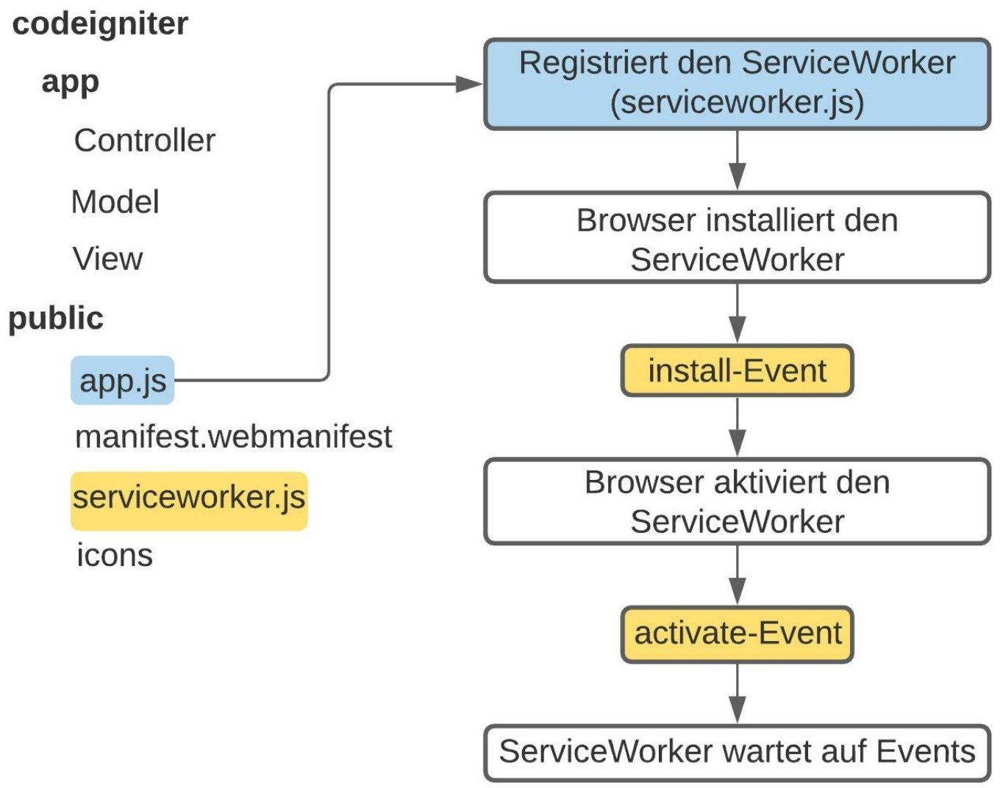
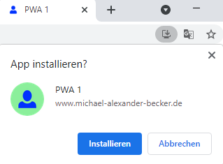
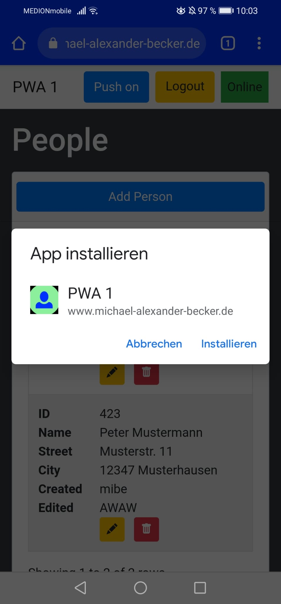
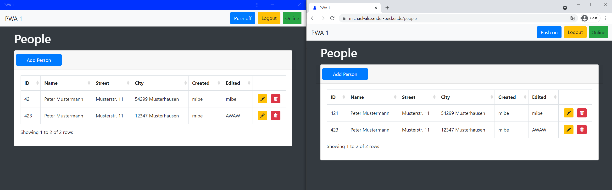
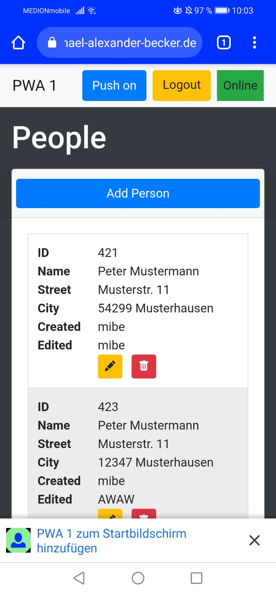
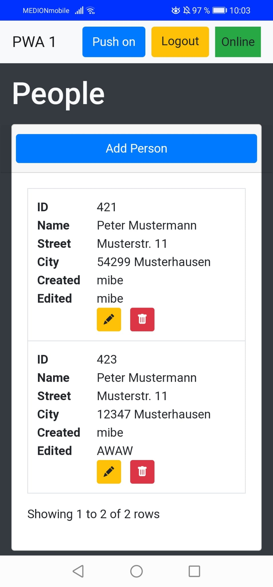
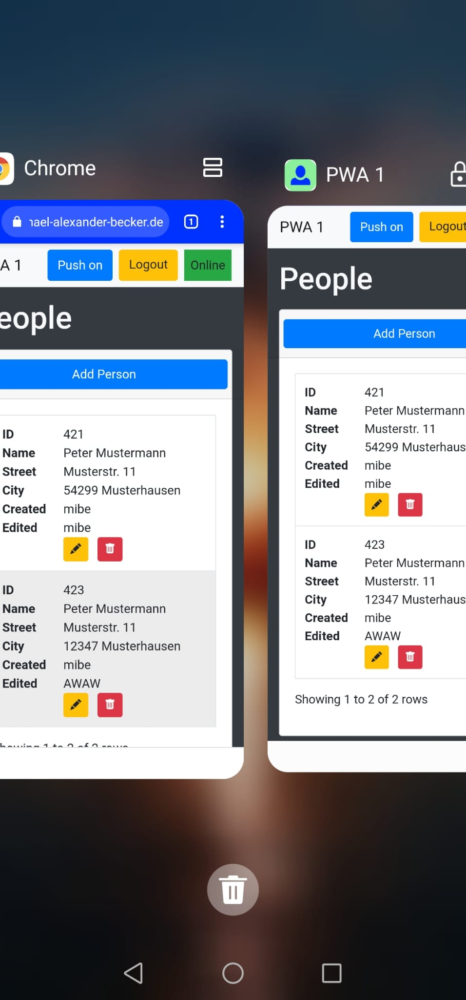
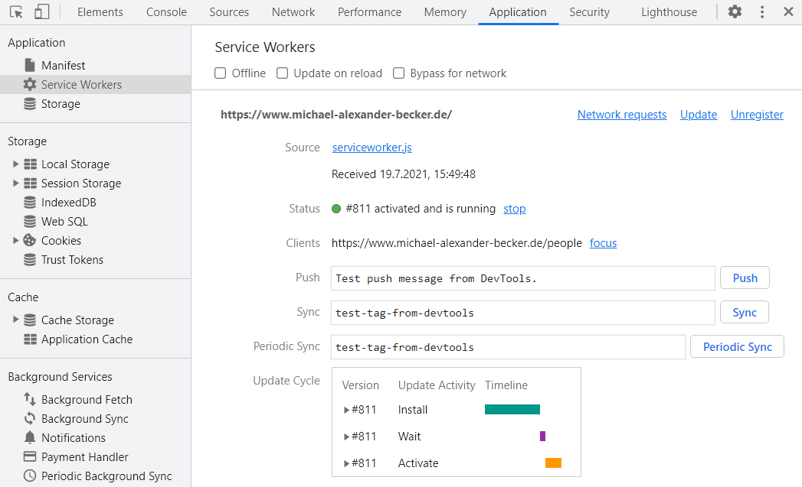

Nachdem nun das Web-App-Manifest erfolgereich erstellt wurde, ist nun lediglich noch der ServiceWorker
mit fetch-Event notwendig, um die PWA installierbar zu machen.
Der ServiceWorker ist das Herzstück einer PWA und wird installiert, wenn die Webseite anfragt, diesen zu registrieren.
Nach der Installation fungiert dieser als Proxy, der im Hintergrund arbeitet, Netzwerkanfragen bearbeitet und Daten cached.
Somit erlaubt es der ServiceWorker, die Webseite offline zu verwenden, Anfragen zu bearbeiten, Push-Benachrichtigungen zu senden
und Hintergrund-Synchronisationen durchzuführen.
Wichtig dabei ist, dass der ServiceWorker sich im root-Verzeichnis des Projektes befindet, damit dieser auf alle
Bestandteile des Projektes zugreifen kann.
Des Weiteren muss neben der serviceWorker.js-Datei eine weitere JavaScript-Datei hinzugefügt werden,
im Beispiel die app.js-Datei, da der Service Worker auf einem eigenen Thread läuft und somit nicht auf den DOM
der Webseite zugreifen kann.
<body>
<script src="app.js"></script>
</body>
Die app.js wird im Body einer jeden HTML-Seite eingebunden und registriert im ersten Schritt den ServiceWorker,
wenn der verwendete Browser diese unterstützt.
Die Unterstützung der ServiceWorker wird über navigator abgefragt.
Ist die Abfrage erfolgreich, so wird der ServiceWorker über die register('serviceworker.js')-Funktion
registriert und bei Bedarf eine positive Rückmeldung in der Konsole erzeugt.
Unterstützt der Browser ServiceWorker nicht, so wird in der Konsole eine entsprechende negative Rückmeldung
samt des Fehlercodes ausgegeben.
navigator.serviceWorker.register('serviceworker.js')
.then(() => {
console.log('[SW] Service worker has been registered');
},
e => {
console.error('[SW] Service worker registration failed', e);
}
);
Nachdem der ServiceWorker nun über die app.js registriert wurde, wird dieser automatisch vom Browser installiert.
Nun benötigt es in der serviceworker.js ein install-Event, ein activate-Event
und ein fetch-Event.

Das install-Event reagiert auf die Installation durch den Browser mit Hilfe des EventListener
(self.addEventListener("install")).
Dieses Event wird dafür genutzt, den Cache des Browser zu öffnen, diesen zu benennen und mit Assets zu füllen,
damit die PWA offline Funktionieren kann.
Dazu wird die Cache API des ServiceWorker genutzt, welche es erlaubt, Assets die durch Netzwerkanfragen geliefert wurden,
domainspezifisch und dauerhaft zu speichern.
Mehr zum install-Event und den Ressourcen, die gecached werden, in Kapitel der
offline Fallbackpage und der PWA Ausführung 2.
Nachdem das install-Event im ServiceWorker ausgeführt wurde, wird der ServiceWorker aktiviert
und das activate-Event, welches sich ebenfalls im ServiceWorker befindet, ausgelöst.
Der Hauptnutzen des activate-Events ist das Aufräumen von Ressourcen, die in vorherigen Versionen
des ServiceWorker-Scripts genutzt wurden.
Dabei werden alle alten Caches gelöscht, die nicht dem aktuellen Cache entsprechen.
Nach der Aktivierung hat der ServiceWorker Zugriff auf alle Datein und Seiten und kann über
das fetch-Event festlegen, wie mit den Ressourcen und Serveranfragen umgegangen werden soll.
Ein fetch-Event wird jedes mal abgesetzt, wenn eine Ressource, die der ServiceWorker kontrolliert,
(im Fall des Beispiels alle Ressourcen, da der ServiceWorker sich im root-Verzeichnis (public-Ordner) befindet)
geladen wird.
Mehr zum fetch-Event und wie dieses die offline-Fallbackpage steuert ist im Kapitel der Fallbackpage zu finden.
Dank des Web-App-Manifests und dem im ServiceWorker enthaltenen fetch-Event, ist die PWA nun installierbar.
Die sogenannte Add to Home Screen (A2HS)-Action kann beim Chrome Browser am PC über einen Pfeil durchgeführt werden,
der am rechten Rand der URL-Leiste erscheint, nachdem der Login erfolgreich durchgeführt wurde.
Wird die PWA auf dem Smartphone aufgerufen, so erscheint nach dem Login am unteren Bildschirmrand ebenfalls die
Installationsaufforderung.
In der Abbildung ist zu sehen, dass die installierte Version der PWA als eigene Anwendung startet und nicht
als Tab an den Chrome Browser gebunden ist.



Des Weiteren ist zu erkennen, dass die PWA sich, wie eine native App aus dem Play Store,
im Vollbildmodus zeigt und beispielsweise keine URL einblendet.



Wie beim Web-App-Manifest kann nach der Fertigstellung der Komponenten des ServiceWorker ebenfalls überprüft werden,
ob dieser erkannt wird und richtig arbeitet.
Dafür im Chrome Browser ebenfalls Rechtsklick mit der Mouse und "Untersuchen" auswählen.
Dann unter "Application" die Option "Service Workers" auswählen.
